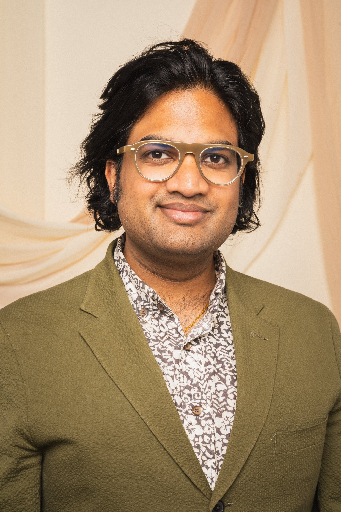
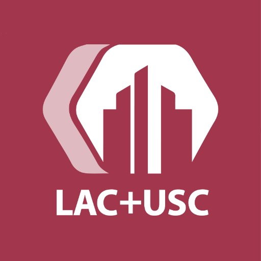

Psychiatry returned to its senses. A deeper kind of care in the Presidio of San Francisco · in your home · or virtually across five states.
A national park as your waiting room.
Most psychiatry treats a symptom. I treat the whole human: the biology, the story, the nervous system, and the search for meaning.
Conventional care fragments you across specialists who don't speak to one another. Your brain, your gut, your sleep, your relationships, your purpose should be handled under one roof.
One physician holding the full spectrum. Evidence-based medicine and psychotherapy, metabolic and nutritional health, neuromodulation, and contemplative wisdom all woven into a single plan.
Not a faster appointment. A deeper one. Care designed around your life, delivered in a place that helps your nervous system remember what calm feels like.
I am located in one of the most magical places in San Francisco — 1,500 acres of forest, coastline, and quiet on the edge of the city. Discretion is built into the geography. You arrive through cypress and fog, not a fluorescent waiting room.
A calm, unmarked setting away from the clinical bustle. You are the only patient on the schedule when you arrive.
Walk-and-talk sessions, daylight, and the regulating effect of the natural world built into the therapeutic frame, not an afterthought.
Generous appointments, direct access between visits, and continuity conventional psychiatry can't offer including private home visits when you'd rather not travel.
Health is not the absence of a diagnosis. It is the whole system being coherent and well. I assess and treat across four dimensions at once, drawing on the best of Western evidence and Eastern practice.
Psychotherapy, psychodynamic insight, and the narrative work of understanding why you feel the way you do.
Metabolic and nutritional psychiatry, sleep, hormones, and inflammation is part of the biology that drives mood.
Precise pharmacology and neuromodulation that work with your nervous system, not against it.
Meaning, contemplative practice, and psychedelic integration is vital to the human search for purpose and connection.
Most patients come for one thing and stay for the way it all connects. Every service below is delivered personally, and designed to work together.
A small, by-invitation practice with generous appointments, direct access, and true continuity: in-office, in your home, or virtual.
Treating mood through biology inclusive of nutrition, metabolism, sleep, and inflammation alongside the mind.
Drug-free, FDA-cleared brain stimulation and emerging modalities for depression, anxiety, and beyond.
Depth-oriented, somatic, attachment theory, IFS, trauma-informed evidence-based therapy — the relationship at the center of all the work.
Safe, structured preparation and integration to turn profound experiences into lasting change.
Compassionate, medical treatment for substance use and behavioral addiction, without judgment.
Expert guidance and trusted referrals when a higher level of care is the right next step.
Concentrated, multi-day work for those who want meaningful progress in a focused window of time.
Working with couples and families as a system because we heal in relationship, not isolation.
For many people, the answer isn't another prescription. Neuromodulation gently retrains the brain's circuitry with a drug-free, evidence-based path for depression, anxiety, and conditions that haven't responded to medication alone.
FDA-cleared magnetic pulses that re-activate underperforming mood circuits — no anesthesia, no downtime.
Targeting and dosing matched to your brain and your goals, not a one-size-fits-all setting.
Delivered alongside therapy, metabolic care, and lifestyle work to maintain gains.

A psychiatrist who refuses to treat you in pieces.
Dr. Raghu Appasani is a board-certified psychiatrist and diplomate of the American Board of Psychiatry and Neurology, fellowship-trained in addiction psychiatry and integrative-medicine focused and one of the few physicians practicing across the entire spectrum of mental health, bringing together evidence-based psychotherapy, pharmacology, metabolic and nutritional medicine, neuromodulation, and holistic, contemplative practice into a single, personalized approach.
His path is deliberately eclectic: rigorous Western training paired with years studying healing traditions of the East. He has worked at the frontiers of psychedelic science, neuroscience, addiction science, digital wellness, and global mental health. He writes and speaks widely on what it means to be well and not just symptom-free.
The Presidio practice is the fullest expression of that philosophy: a place where the science is serious, the care is unhurried, and the setting itself helps you heal.

A brief, confidential inquiry by phone, text, or form. We'll see if the practice is the right fit for you.
An extended first consultation across mind, body, brain, and spirit to get the full picture, not a 15-minute intake.
One integrated plan that may weave together therapy, medication, metabolic care, and neuromodulation.
Continuity, direct access, and adjustments over time. Concierge means you are never managing this alone.
In-person concierge care in San Francisco at the Presidio or in the privacy of your home with virtual continuity for established patients across five states.
Requesting a consultation is confidential and carries no obligation. Tell me a little about what's bringing you here, and we'll take it from there.